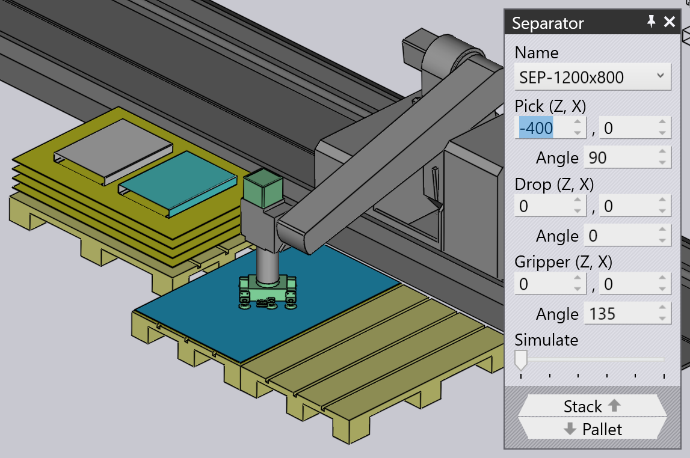

Ajouter des tôles de séparation
Certains modèles de dépôt peuvent utiliser des tôles de séparation entre les couches de pièces pour rendre le dépôt plus stable. La sélection de la case à cocher Add separator lors de la modification d’un dépôt ajoute une autre palette contenant les tôles de séparation.
Panneau de séparation

Vous pouvez cliquer sur la tôle de séparation dans la simulation pour afficher le panneau Separator illustré ci-dessus.
-
Le sélecteur Nom peut être utilisé pour choisir une tôle de séparation différente. Vous pouvez choisir le lien Importer… dans ce sélecteur.
-
La section Prendre (Z,X) est utilisée pour configurer la position et l’orientation de la tôle de séparation sur la palette de prise. Dans l’image ci-dessus, la tôle de séparation a été pivotée de 90° et décalée sur un côté de la palette.
-
La section Drop (Z,X) est utilisée pour configurer la position et l’orientation de la tôle de séparation sur la pile de dépôt.
-
La section Gripper (Z,X) est utilisée pour configurer la position et l’orientation du préhenseur sur la tôle de séparation. Cela pourrait être utilisé pour éloigner le préhenseur de toutes les fentes ou trous dans la tôle de séparation. (L’image ci-dessus montre le préhenseur pivoté de 135° par rapport à l’orientation par défaut).
-
Le curseur Simuler peut être utilisé pour simuler uniquement le cycle de la tôle de séparation afin que les modifications que vous apportez dans les paramètres ci-dessus puissent être rapidement testées.
-
Le lien Pile est utilisé pour passer à la modification du dépôt, et le lien Palette est utilisé pour modifier la position et l’orientation de la palette sur laquelle la tôle de séparation est placée.
Tôles de séparation personnalisées
Vous pouvez également importer une tôle de séparation personnalisée depuis le menu Fichier :

Si cela fonctionne correctement, un message d’importation comme celui-ci s’affiche (sinon, un message d’erreur approprié s’affiche). Le format du fichier DXF ou GEO pour définir une tôle de séparation personnalisée est expliqué sur cette page.

Vérification du poids
La tôle de séparation peut être trop lourde pour le préhenseur. Dans ce cas, vous pouvez voir un indicateur d’erreur dans le panneau du navigateur, et pointer sur l’erreur affiche plus de détails sur la surcharge.

Vérification de l’aspiration
Si les ventouses se trouvent au-dessus d’un trou sur la tôle de séparation, la perte d’aspiration est détectée et affichée comme une erreur dans la ligne Préhenseur de la colonne D1 dans le navigateur de pliage.